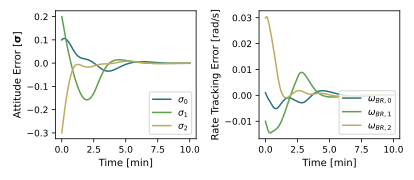
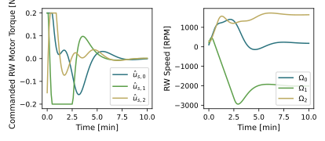

scenarioAttitudeFeedbackRWMuJoCo
It’s recommended to review the following scenario(s) first (and any recommended scenario(s) that they may have):
examples/mujoco/scenarioReactionWheel.py
This script demonstrates how to run the classic Basilisk
scenarioAttitudeFeedbackRW.py example using MuJoCo dynamics via
MJScene instead of the traditional hub-centric Basilisk
Module: spacecraft dynamics.
The multi-body system is created programmatically as a MuJoCo XML string. It consists of a free-floating spacecraft bus (“bus”) with three reaction wheel rigid bodies (“rw1”, “rw2”, “rw3”) attached via hinge joints. Each hinge joint is driven by a MuJoCo single-input actuator, which applies a motor torque directly to the wheel spin DOF.
A standard Basilisk FSW stack is used:
inertial3Dgenerates an inertial attitude reference.attTrackingErrorcomputes the attitude and rate tracking errors.mrpFeedbackcomputes the commanded body torque.rwMotorTorquemaps the commanded body torque into individual wheel motor torque commands.
Three small “adapter” modules bridge Basilisk messaging to MuJoCo objects:
scalarJointStatesToRWSpeedconverts MuJoCo wheel joint rate states into anRWSpeedMsgso the controller can compensate for wheel momentum.arrayMotorTorqueToSingleActuatorsconverts theArrayMotorTorqueMsginto threeSingleActuatorMsgmessages (one per MuJoCo motor).saturationSingleActuatoroptionally clamps eachSingleActuatorMsgto emulate actuator torque limits (for example, reaction wheeluMax).
The simulation runs for 10 minutes. The attitude error, rate error, wheel motor torques, and wheel speeds are plotted at the end.
Illustration of Simulation Results
 - scenarioAttitudeFeedbackRWMuJoCo.getHr16SmallWheelParams()[source]
Return a simple set of wheel parameters based on Honeywell HR16 small configuration (maxMomentum = 50 Nms).
- scenarioAttitudeFeedbackRWMuJoCo.makeMjXmlString(busMass: float, busIDiag: Tuple[float, float, float], rwMass: float, rwJs: float, rwJt: float)[source]
Create an MJCF XML string for a free-flying bus with three reaction wheels.
Notes: - Contact is disabled because this scenario does not involve collisions. - Actuators are created in Python (via scene.addJointSingleActuator), not in XML.
- scenarioAttitudeFeedbackRWMuJoCo.plotAttitudeAndRateErrors(timeMin: ndarray, sigmaBR: ndarray, omegaBRB: ndarray)[source]
Plot attitude error (MRPs) and rate error side-by-side with a shared x-axis.